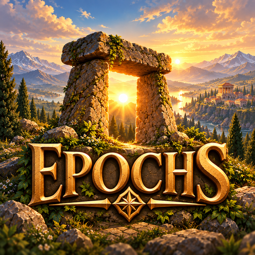

Privacy Policy
Epochs (Android app). Effective 21 November 2026.
In short: Epochs has no accounts, no ads and no in-app purchases. Your game is saved on your phone. From version 0.2.1 the game sends anonymous progress statistics (how far players get), and from version 1.2.0 anonymous error reports when something goes wrong, with no name, account or contact details. You can turn both off in Settings.
Who we are
Epochs is made by an independent developer. Contact: sontrinhhuubao@gmail.com.
What stays on your phone
Your saved game and your settings (for example, sound on or off, and your language) are stored on your device. They are removed when you uninstall the game. We never receive them.
Anonymous progress statistics
To see how far players get and plan new content, the game sends small progress reports over the internet:
- a random ID made by the game when it is first opened (not your device ID, advertising ID or Google account), and a random ID for each play session;
- game progress: your current age, how many technologies, buildings, people and wonders you have, discoveries, achievements earned, how many days you have played, and when you start a new game;
- the game's version, the platform (for example, Android), and the time on your phone when each report was made.
We do not collect your name, email, contacts, location, photos or any other personal information, and we do not use the reports for advertising, sell them or share them with anyone.
The reports are stored with Supabase, the database service we use. Like any website or service your phone connects to, Supabase receives your IP address when a report arrives; we do not store it with the reports. We keep the reports for as long as they help us plan the game, and at most 24 months.
Sharing is on by default. You can turn it off at any time in Settings → "Share anonymous progress"; reports waiting on your phone are then deleted and nothing more is sent. Because the reports carry no name or account, we cannot tell which ones are yours, but you can email us with any question about them.
Anonymous error reports
From version 1.2.0, when the game hits an error or closes unexpectedly, it sends a short report so we can find and fix the bug:
- what went wrong: the error message and the places in the game's code where it happened, with file locations on your phone and anything that looks like an email address removed;
- the last few lines of the game's own log and which screen was open;
- your phone's model, Android version, the game's version and how much memory the game was using;
- the same random IDs as the progress statistics.
At most 20 reports are sent per day. They are stored, kept and protected in the same way as the progress statistics, and the same Settings switch ("Share anonymous progress") turns them off.
Android backup
If backup is switched on in your phone's settings, Android may include the game's save in your device backup with Google, so it comes back when you set up a new phone. This backup is made and stored by Google under your Google account and your backup settings; we have no access to it. You can turn it off in your phone's backup settings.
Save codes
Settings → Transfer save can copy your save as a code to your phone's clipboard, so you can move your town to another device. The code is only created when you ask for it, and it goes wherever you paste it. The game does not send it anywhere.
Children
Epochs is not directed at children under 13. It does not collect personal information from anyone, children included; the progress statistics and error reports above are anonymous.
Permissions
The game uses the internet only to send the anonymous statistics and error reports above. It can show reminders (for example, when research finishes), which Android asks you to allow; it also restores those reminders after your phone restarts. You can turn reminders off in Settings or in your phone's notification settings. It asks for no other permissions: no contacts, location, camera, microphone or files.
Changes
If this policy changes, we will update this page and its effective date. If a future version of the game collects or sends anything, this policy will say so before that version is released.